Lotte World Seoul Guide 2026
Tickets, Magic Pass, ride priorities and a realistic plan for your day
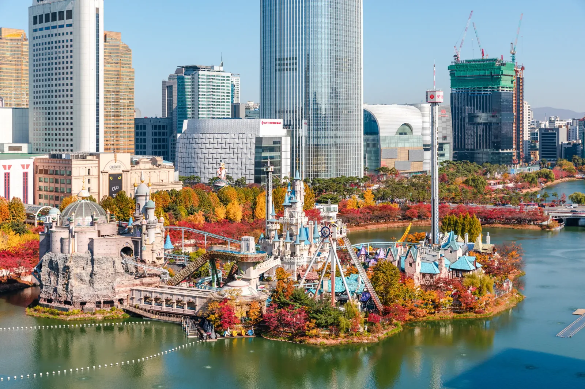
If rides are the reason you are coming to Lotte World, treat it as the main event and give it the day. Long queues, moving between Adventure and Magic Island, meals, breaks and weather can use far more time than the map suggests.
Do not start with a list of every ride. First understand what is actually in the park, then pick the 3–5 rides you would genuinely regret missing and build the rest of the day around them. That decision also makes it much easier to judge whether an After4 ticket or Magic Pass is actually worth paying for.
The short answer
A 1Day ticket is the safer default if this is your first visit and the rides matter. An After4 ticket can work when you want a shorter evening visit, have only a few priorities, or care as much about the atmosphere as the ride count.
With younger children, do not measure a good day by how many attractions you complete. Height restrictions, queues, meals, noise and simple fatigue can matter more than squeezing in one more ride.
And just because the Aquarium, Seoul Sky and Seokchon Lake are next door does not mean they all belong in the same itinerary. If Lotte World is the reason you came to Jamsil, protect the time you came for.
Quick decision
Choose a full Lotte World day if:
You have several must-rides, this is your first visit, or you do not want every long queue to force another attraction off the schedule.
Choose After4 if:
You are happy with a shorter ride list, mainly want the evening atmosphere, or Lotte World is only one part of your Jamsil day.
Going with younger kids?
Check height restrictions before deciding which rides matter and whether a Magic Pass is worth the extra cost. Plan around energy and breaks, not a target ride count.
One rule before you buy anything:
Choose your must-rides first. Choose your Magic Pass second.
Which Lotte World Ticket Should You Buy?
For most first-time visitors, the real choice is not between every ticket sold by Lotte World. It is whether you need a full day inside the park or whether arriving after 4 p.m. is enough for the day you actually want.
1Day: the safer choice if rides matter
Choose a 1Day ticket if you have several rides you do not want to miss.
The extra hours matter because your usable park time is not just ride time. You will lose time to queues, finding your way between Adventure and Magic Island, meals, restroom stops, weather changes and attractions that temporarily stop operating.
A full-day ticket does not guarantee you will ride everything. It gives you more room to recover when the plan changes.
It is the better default if:
- this is your first Lotte World visit
- you have 3–5 must-rides
- popular rides are a major reason for visiting
- you are visiting with children who need regular breaks
- you want to use Magic Pass strategically
- you do not want one long queue to force you to abandon the rest of the plan
After4: good value only when you accept a shorter day
After4 admission begins at 4 p.m.
It can make sense if your goal is a few selected rides, photos, the evening atmosphere or a shorter Lotte World experience after spending the first half of the day elsewhere.
What it should not be treated as is simply a cheaper version of the 1Day ticket.
If you arrive after 4 p.m. with five headline rides, a school-uniform rental, dinner, a parade and Magic Island all on the list, you have created a time problem before you enter the park.
Choose After4 when:
- you are happy with only a few priority rides
- the evening atmosphere matters more than ride count
- Lotte World is only one part of your Jamsil day
- you have already accepted that some headline rides may be skipped
Do not make After4 your default if this is your only visit and several high-demand rides are non-negotiable.
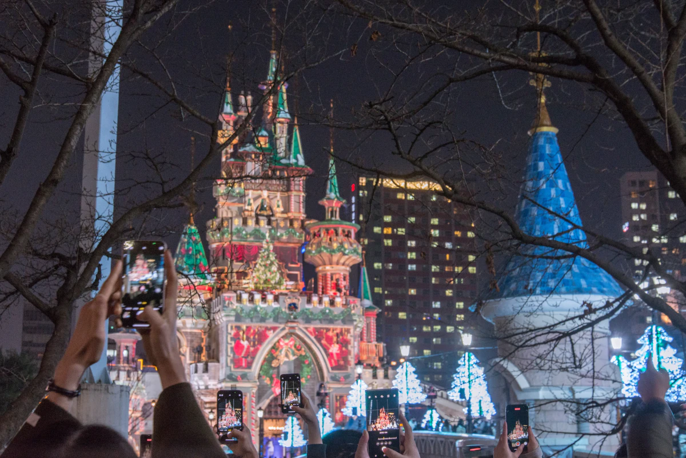
Current official ticket prices
Checked: September 15, 2026
| Ticket | Adult | Youth | Child |
|---|---|---|---|
| 1Day | ₩67,000 | ₩58,000 | ₩50,000 |
| After4 | ₩55,000 | ₩47,000 | ₩39,000 |
These are regular official prices published by Lotte World.
You may be able to buy the same admission for less through online attraction booking platforms. As a practical guide, check for around 20–30% savings, while some promotions may be larger. Prices vary by date and seller, so check the current rate before booking.
What is included — and what is not
The standard Lotte World ticket gives you admission to Lotte World Adventure and use of regular attractions, excluding separately paid facilities such as arcade-style games. The standard comprehensive ticket also includes admission to the Folk Museum.
The Folk Museum is useful if you genuinely want to visit it, but for most ride-focused travelers it should not influence the main ticket decision. The bigger question remains how much park time you need.
More importantly:
Magic Pass is not included in your normal admission ticket.
It is a separate limited-quantity product. Buying a Lotte World admission ticket does not give you priority access to rides.
We deal with Magic Pass later in this guide because the right order is:
Choose your visit length → choose your must-rides → then decide whether a Magic Pass is worth paying for.
Check your ticket price before you book
Lotte World frequently runs its own discounts, while Trip.com and other attraction platforms may offer a different ticket price or package for the same date.
Compare:
- final price
- 1Day vs After4
- what the product actually includes
- cancellation conditions
- whether the ticket is admission only or a bundle
Adventure vs Magic Island: Decide Where Your Day Starts
Lotte World is split between Adventure, the large indoor park, and Magic Island, the outdoor section on Seokchon Lake.
You can move between them during the day, but that does not mean you should keep crossing back and forth every time a ride catches your attention on the map.
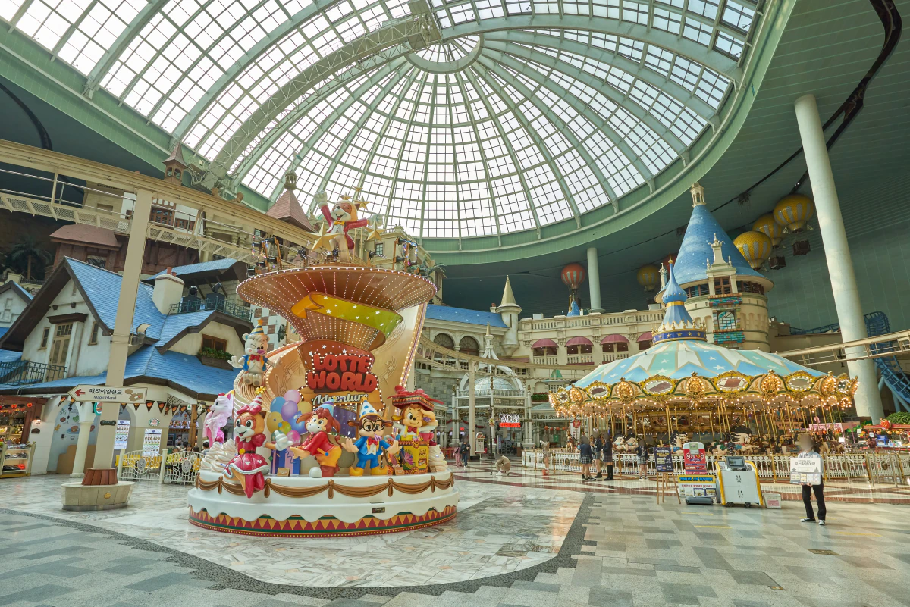
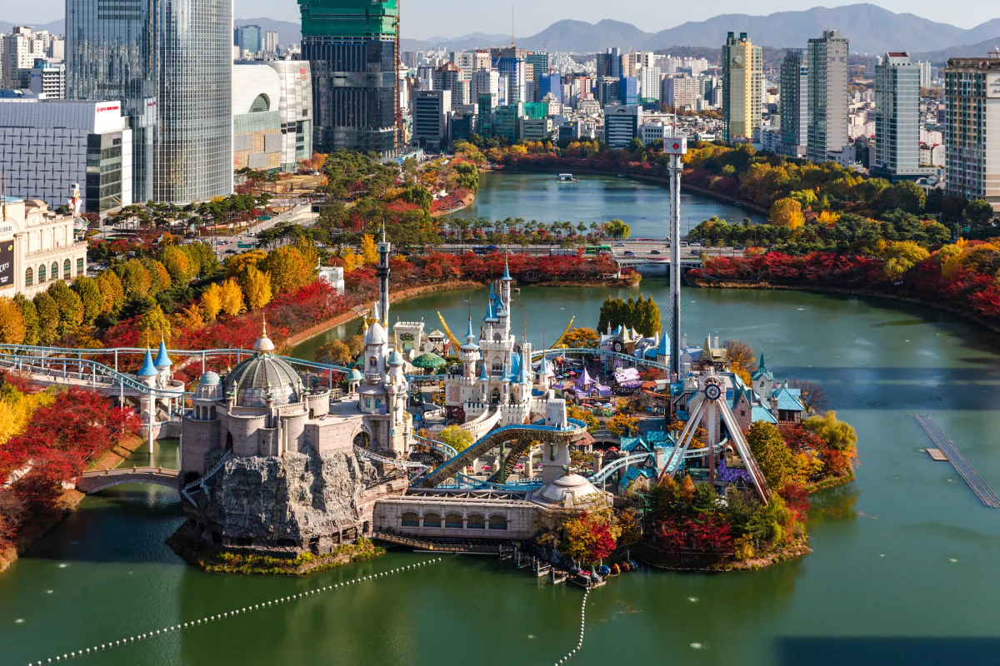
Your first question should be simpler:
Where are the rides you care about most?
Adventure: the safer base when weather is uncertain
Adventure is the indoor side of Lotte World, covered by a huge glass dome.
It includes rides, performances, family attractions and several of the park's major indoor experiences. It is also the more reliable part of your plan when rain, strong wind, heat or cold makes the outdoor section less predictable.
Adventure makes a sensible starting point if:
- most of your must-rides are indoors
- you are visiting with younger children
- the weather forecast is poor
- you want easier access to food and breaks
- you would rather build the day around attractions that are less exposed to weather disruption
But “indoor” does not mean “short queues.” Popular Adventure rides can still consume a large part of your day.
Magic Island: prioritize it when your must-rides are outside
Magic Island sits outside on Seokchon Lake and is reached from Adventure via the second-floor overbridge.
This is where several of Lotte World's headline thrill rides are concentrated, including attractions such as Atlantis, Comet Express and the Gyro rides.
If two or three of your highest-priority rides are on Magic Island, do not leave them until late in the day simply because Adventure is the first area you see.
Check the weather and operating status, then decide whether Magic Island deserves your first serious block of ride time.
Weather can change the value of your plan
Magic Island is more exposed to weather.
Some outdoor attractions can suspend operation because of rain, wind, high or low temperatures, or on-site operating conditions. That matters because a ride you planned to “come back for later” may not still be operating when you return.
If the forecast looks unstable and an outdoor ride is one of your must-rides, consider moving it earlier rather than treating it as an end-of-day extra.
At the same time, do not rush outside just because Magic Island has famous rides. If the rides you actually care about are indoors, there is no prize for following somebody else's attraction ranking.
Do not waste the day crossing between zones
Adventure and Magic Island are connected, but repeated backtracking still costs time.
Group your rides by zone, start where your priorities and the weather make the most sense, and avoid unnecessary backtracking.
A reason to switch zones might be a specific ride, a meal, a performance, bad weather or simply needing a break.
It should not be:
“We saw something else on the map.”
Before you enter, mark your 3–5 must-rides and note which side of the park they are on.
That one step will tell you far more about where to start than a generic list of the “best rides.”
What Rides Are at Lotte World?
The point of this list is not to turn Lotte World into a checklist. It is to help you understand what is actually in the park before you choose the few rides that deserve priority.
Magic Island — thrill rides first
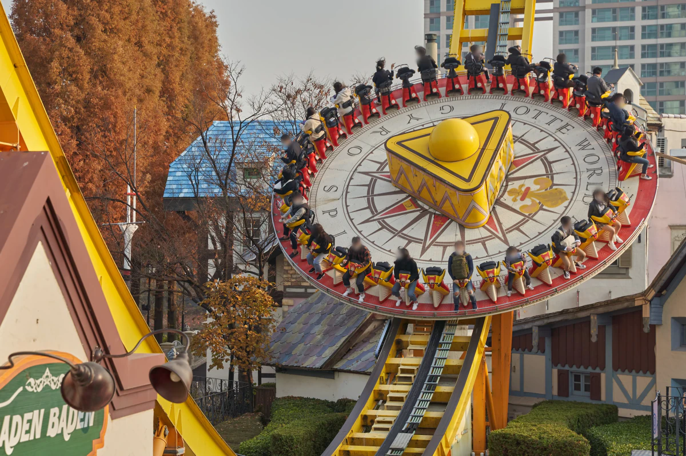
-
Atlantis
A fast boat-style thrill ride with sudden acceleration. Lotte World describes a top launch speed of 72 km/h.
→ One of the strongest must-ride candidates if thrills are a main reason for your visit.
-
Comet Express
A dark coaster with spinning ride vehicles.
→ A major candidate for a thrill-focused day and easy to group with Atlantis in a Magic Island block. Current official guidance lists 120 cm+.
-
Gyro Swing
A large circular ride that spins while swinging high above the ground.
→ Skip it without regret if strong spinning or height bothers you. Current official guidance lists 130–190 cm.
-
Gyro Drop
A drop-tower ride that lifts riders high before a rapid descent.
→ A clear choice for people who enjoy drop sensations, and an easy exclusion for people who do not.
-
Gyro Spin
A large circular spinning thrill ride.
→ A better fit for visitors who enjoy rotational thrill rides more than coasters.
-
Fantasy Dream
A gentler mini-train ride through a fantasy setting.
→ A useful change of pace for families and non-thrill riders.
-
Petit Beep Beep
A small car ride for younger children near the lake.
→ Gives families with small children a reason to include Magic Island in the day.
-
Moonboat
A paid boat experience on the lake for couples or families.
→ Treat this as an additional paid experience, not a standard ride automatically included with admission.
Adventure — indoor rides
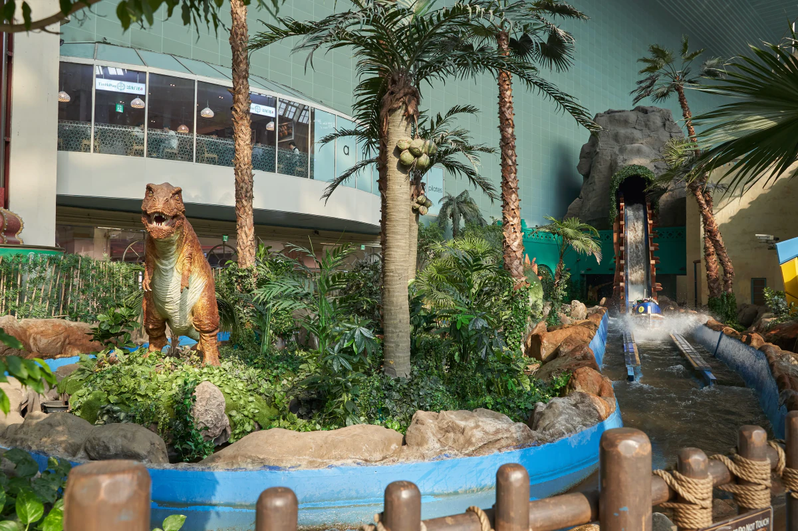
-
French Revolution
A fast indoor roller coaster with sharp turns.
→ One of the strongest indoor thrill choices and less dependent on Magic Island weather.
-
The Conquistador
A large pirate-ship-style swinging ride that rises steeply.
→ A good option for people who dislike coasters but still want a substantial thrill ride.
-
Flume Ride
A log-style water ride through a jungle and dinosaur-themed setting.
→ A useful middle ground between gentle family attractions and major thrill rides. Current official guidance lists 110 cm+.
-
The Adventure of Sindbad
A boat dark ride through an underground Sindbad-themed environment.
→ A strong family choice when major thrill rides are not the goal. Current official guidance lists 110 cm+.
-
Camelot Carrousel
A traditional carousel.
→ Works for younger children, families and anyone who wants a lower-intensity break.
-
PUBG World Agent
An interactive PUBG-themed attraction.
→ A better fit for visitors who want game-style participation rather than a conventional ride. Current official guidance lists 130 cm+.
-
3D Desperados 2
A 3D Western-themed shooting attraction.
→ Useful for groups that want a competitive indoor activity between rides.
-
Bumper Car — Adventure
An indoor bumper-car attraction.
→ A simple group-friendly option that does not require a coaster-style thrill preference.
-
Balloon Ride
A slow aerial ride above the Adventure indoor park.
→ Good for non-thrill riders or anyone who wants to see the indoor park from above.
-
World Monorail
A gentle elevated monorail around parts of Adventure.
→ A low-effort option for seeing the park while giving your legs a break.
-
Pharaoh's Fury
An indoor motion dark ride built around a pharaoh-treasure adventure.
→ A practical indoor backup when outdoor operations become less reliable.
-
Across Dark
An indoor attraction themed around space and ruins.
→ Check whether this attraction is operating on your visit date before putting it on your must-ride list.
Underland — indoor adventure
-
Wild Wing
A motion attraction designed to feel like flying through strong wind.
→ A fit for visitors who want movement and effects without choosing a conventional coaster.
-
Wild Jungle
A themed ride through ancient-ruin scenery in a jeep-style vehicle.
→ Better for families that value themed exploration over high-intensity thrill.
-
Wild Valley
A water-based adventure ride through caves and rapid-style scenery.
→ A family adventure option with more movement than a gentle scenic ride.
-
4D Shooting Theater
A 4D shooting attraction using interactive guns.
→ Good for groups that want a game-like experience instead of another ride queue.
-
Dream Boat
A gentle boat ride through a storybook-style forest.
→ One of the easier Underland choices for families with younger children.
Kiddie Zone — younger children
-
Kids Bumper Car
A bumper-car attraction designed for children.
→ Current official guidance lists 110–125 cm, so check your child's height first.
-
Undersea Kingdom
An underwater-themed play area for young children.
→ For small children, this may be more valuable than trying to build the day around famous coasters they cannot ride.
-
Jumping Fish
A children's ride that spins while moving up and down.
→ A fit for children who want movement but are not ready for stronger attractions.
-
Eureka
A children's ride with small vehicle-style seats that rise and rotate.
→ A useful shorter ride within a young-child-focused plan.
-
Magic Boong Boong Car
A colorful small-car ride for children.
→ Works well as part of a shorter ride block for small children.
-
Brother Moon & Sister Sun
A children's ride themed around a Korean folk story with up-and-down movement.
→ A step up from simple play areas without moving into major thrill territory.
-
Children's Story Theater
A children's theater with magic or musical-style performances.
→ A useful way to keep the experience going while giving children a break from queues and rides.
Choose Rides by Traveler Type
You do not need to compare every attraction one by one.
Start with the kind of day you actually want, then narrow the list from there.
If You Want the Biggest Thrills
Start with:
- Atlantis
- Comet Express
- French Revolution
- Gyro Swing
- Gyro Drop
These are the rides most likely to shape a thrill-focused Lotte World day.
If Atlantis and Comet Express are high priorities, give Magic Island serious time. If the weather is poor, French Revolution gives you a major indoor thrill option.
You probably do not need all five as must-rides. Pick the three that matter most, then treat the others as upgrades if the queues cooperate.
Families With Young Kids
Start with:
- Kids Bumper Car
- Undersea Kingdom
- Jumping Fish
- Eureka
- Magic Boong Boong Car
- Children's Story Theater
Add gentler family rides such as Camelot Carrousel or Balloon Ride if they fit your child.
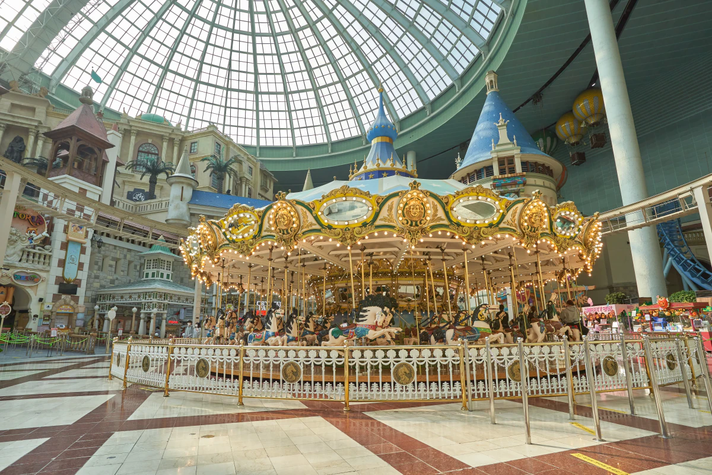
Do not begin with a list of famous rides and then discover that your child is too short to ride them.
Check height restrictions first, then build the day around what the youngest child can actually enjoy.
For this group, a successful day may involve fewer headline attractions and more short rides, shows and breaks.
Older Kids and Teens
A mixed family with older children or teenagers can usually combine stronger rides with group-friendly attractions.
Good starting candidates include:
- Atlantis
- Comet Express
- French Revolution
- Flume Ride
- The Adventure of Sindbad
- Bumper Car
- 3D Desperados 2
This group has more flexibility than families with small children but does not need to turn the day into a thrill-ride marathon.
Let each person choose one or two priorities, then look for overlap.
If You Do Not Like Big Drops or Strong Spinning
Lotte World is still worth considering even if roller coasters and drop rides are not your thing.
Look at:
- Balloon Ride
- World Monorail
- Camelot Carrousel
- The Adventure of Sindbad
- Fantasy Dream
- Dream Boat
- Children's Story Theater
Interactive attractions such as 3D Desperados 2 or 4D Shooting Theater can also give you something more active without committing to a major coaster.
Do not let somebody else's “best rides” list convince you that you need to spend the day on attractions you already know you dislike.
Rainy-Day or Bad-Weather Picks
When Magic Island becomes less reliable, shift attention indoors.
Useful options include:
- French Revolution
- Flume Ride
- Pharaoh's Fury
- The Adventure of Sindbad
- Wild Jungle
- Wild Valley
- 3D Desperados 2
- Balloon Ride
Bad weather does not mean you have to abandon Lotte World.
It does mean that an itinerary built around Atlantis, Gyro Swing and other outdoor priorities may need to change quickly.
Pick Your 3–5 Must-Rides First
Before you look at Magic Pass tiers or try to optimize the whole park, choose the 3–5 rides you would genuinely be disappointed to miss.
This is the simplest way to stop long queues from controlling your day.
Your list does not need to match somebody else's “Top 10 rides at Lotte World.” A thrill-ride fan, a family with younger children and someone visiting mostly for photos should not have the same priorities.
Start with three categories
Divide the rides you are considering into:
Must-ride
You would accept a long wait or change the rest of the schedule to protect it.
Would-like-to-ride
You want to do it, but only if the wait fits the day.
Bonus
You will ride it if the timing is good. You will not reorganize the day for it.
Only the first group should drive your route.
Keep the must-ride list short
Three priorities is comfortable.
Five is still workable.
Once seven or eight rides become “must-do,” you no longer have a priority list. You have a checklist that depends on every queue cooperating.
That is exactly when one 90-minute wait can start pushing meals, breaks and other rides later and later.
Choose for your group, not for the internet
A famous ride is not automatically worth protecting.
For example, a thrill-focused visitor may build the day around attractions such as Atlantis, Comet Express or French Revolution.
A family with younger children may have a completely different list after checking height restrictions.
Someone who dislikes intense rides may decide that performances, gentler attractions and the atmosphere matter more than any headline coaster.
The correct list is the one that would make your visit feel successful.
Check where your priorities are located
Once you have your 3–5 rides, mark whether they are in Adventure or Magic Island.
If most are on Magic Island, that is a strong reason to give the outdoor section an early block of time, especially when the weather is uncertain.
If most are indoors, there is little reason to rush outside simply because the outdoor thrill rides appear on every “best rides” list.
Your ride list should determine the route — not the other way around.
Give yourself one backup
At least one of your priorities should have a practical substitute.
An outdoor ride may stop because of weather. A major attraction may temporarily close. A queue may suddenly become much longer than expected.
If every ride on your list is a non-negotiable headline attraction, you have no room to adapt.
A better plan is:
3–5 protected priorities + several flexible backups.
Now you are ready to think about Magic Pass
Do not buy a Magic Pass simply because Lotte World is busy.
First ask:
- Which rides are genuinely important to me?
- Which of those rides are eligible for Magic Pass?
- Which Magic Pass tier covers them?
- How much time could I realistically save?
- Is that time worth the extra cost for my group?
That is why the ride list comes before the pass.
Choose the rides first. Choose the Magic Pass second.
The Queue Reality at Lotte World
The biggest mistake at Lotte World is assuming you can decide what to ride as you go.
Popular attractions can build queues of an hour or more, even on weekdays. On crowded days, some waits can stretch much longer.
That changes the way you should plan the park.
A 90-minute queue is not just 90 minutes. Add the walk to the attraction, the ride itself, finding your next destination, meals and breaks, and one decision can take a large piece of your day.
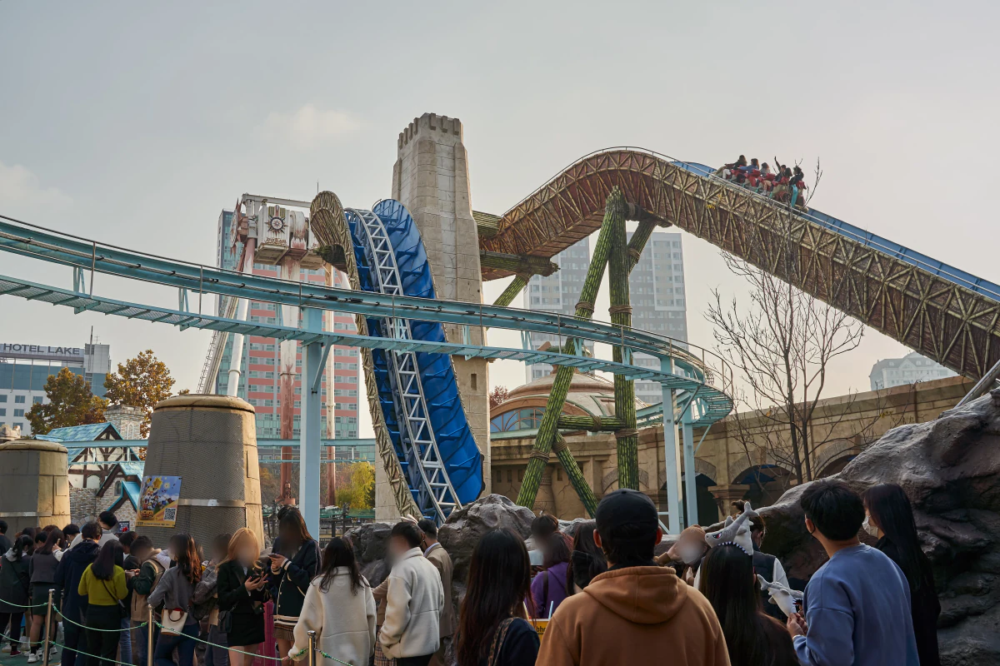
A weekday does not guarantee short lines
Weekdays are generally a better bet than weekends and major holidays, but they are not a guarantee of short waits.
Recent visitors have reported 60-minute-plus waits across several major rides even on weekdays.
So do not build a plan that only works if the park is quiet.
Build one that still works when it is busy.
Decide what is worth waiting for before you arrive
Not every popular ride deserves the same amount of your time.
If Atlantis is one of the main reasons you came, a long queue may be a trade you are willing to make.
If another ride is only a nice-to-have, the same wait may be a reason to walk away.
That distinction should be made before you are standing underneath a 90-minute wait-time sign.
Ask yourself:
Which rides would I still wait for if the queue reached an hour?
Those are your real priorities.
Everything else should be easier to drop.
Set a point where you walk away
You do not need one universal rule for every ride.
But you do need a limit.
For a must-ride, you may accept a long standby wait.
For a second-tier ride, the same wait may cost too much of the day.
The important part is deciding that before queue pressure takes over your schedule.
Once every attraction becomes “we have already come this far, so we may as well wait,” Lotte World can turn into a day of standing in lines rather than riding.
Do not chase every famous ride
A list of the park's most popular rides is easy to find.
Trying to complete all of them is a different problem.
The more headline attractions you make non-negotiable, the more your entire schedule depends on queue lengths you cannot control.
For most visitors, a better target is:
3–5 rides that genuinely matter, then everything else is a bonus.
That gives you room for a meal, a break, bad weather, a temporary ride closure or simply changing your mind.
A long queue should change the plan — not destroy it
If one of your priorities suddenly shows a very long wait, you have options:
- wait because it is genuinely one of your must-rides
- move to another priority and check again later
- use Magic Pass if the ride and your pass are eligible
- replace it with an indoor or lower-wait alternative
- skip it entirely
Skipping a ride is not a failed day.
Spending half the afternoon protecting a ride you did not care about very much is the bigger mistake.
The next step is therefore not to make a longer ride list.
It is to choose the 3–5 rides worth protecting your day for.
Ride Priority Strategy: Protect the Rides That Are Hardest to Recover Later
There is no single “best ride order” that works for everyone at Lotte World.
Your priority should be the rides that are both important to you and difficult to recover later if the queue becomes very long, the weather changes or the attraction temporarily stops operating.
That usually matters more than following somebody else's Top 10 ranking.
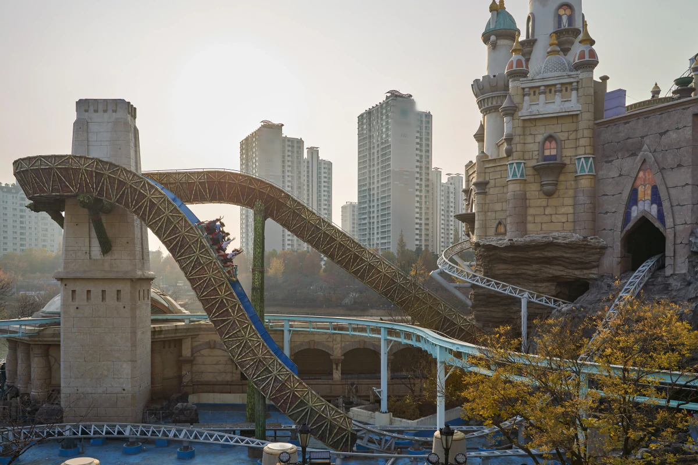
If thrill rides are the main reason you came
If Atlantis, Comet Express or the Gyro rides are among your must-rides, Magic Island deserves serious attention early in the day when the weather is suitable.
Atlantis and Comet Express are both on Magic Island, so travelers who care about both can protect a large part of their thrill-ride plan without repeatedly crossing back into Adventure.
The mistake is spending the first part of the morning on low-priority attractions simply because their queues look short, then reaching your real must-rides after the major waits have already built.
A short queue is only good value if you actually care about the ride.
If weather is uncertain, keep an indoor priority ready
French Revolution gives thrill-focused visitors a major indoor priority inside Adventure.
Other indoor attractions such as Flume Ride and Pharaoh's Fury can also give you alternatives when Magic Island operations become less predictable.
That does not mean indoor attractions will have short queues.
It means bad weather does not have to leave you without a plan.
Use ride roles instead of trying to rank the whole park
You do not need another generic Top 10 list.
Think in roles instead:
Headline outdoor thrill — Atlantis
Outdoor coaster block — Comet Express
Strong spinning/drop thrill — Gyro Swing / Gyro Drop
Indoor thrill backup — French Revolution
Family / medium-intensity indoor option — Flume Ride
Indoor themed backup — Pharaoh's Fury
Someone who dislikes intense rides should not protect Atlantis just because it is famous. A family may remove several of these attractions completely after checking height restrictions.
The point is to give each ride a job in your plan.
Your first two hours should protect something important
Look at your 3–5 must-rides and ask which one would be hardest to recover if you postpone it.
If several of your priorities are on Magic Island and the weather looks stable, an outdoor block early in the day can make sense.
If your priorities are mostly inside Adventure, or the outdoor forecast is poor, starting indoors may be the better use of your time.
Do not cross the park simply because another attraction temporarily shows a shorter wait.
Protect the plan first. Fill gaps second.
Be careful where you use Magic Pass
Some major attractions, including Atlantis, Comet Express, French Revolution, Flume Ride and Pharaoh's Fury, cannot be ridden repeatedly with Magic Pass. Magic Pass use for those attractions is limited to one ride per attraction.
That makes the decision more important.
If one of those rides is a must-ride, use the pass because protecting that ride saves meaningful time — not simply because you happen to be standing nearby.
We compare the current Magic Pass tiers next.
For now, remember the same rule:
The ride should justify the pass. The pass should not decide what you ride.
Magic Pass 2026: Is It Worth It, and Which Tier Should You Buy?
Magic Pass can save a large amount of queue time at Lotte World, but buying one without matching it to your must-rides is an expensive mistake.
In 2026, Magic Pass is no longer a simple choice between “a few fast passes” and “more fast passes.” The current system has four different 5-use tiers, and the attractions you can use them on differ by tier.
That is why the rule for this guide is:
Choose your rides first. Choose your Magic Pass second.
Current Magic Pass prices
Checked: September 15, 2026
Light — ₩54,000
5 uses. Start here only if your priorities fit the lower-priced eligible ride group.
Standard A — ₩65,000
5 uses. More relevant when Atlantis / Flume Ride / Gyro Swing-type priorities matter.
Standard B — ₩65,000
5 uses. More relevant when Comet Express / French Revolution-type priorities matter.
Premium — ₩80,000
5 uses. Wider coverage for travelers whose priorities are spread across multiple ride groups.
Do not choose Premium simply because it has the widest coverage.
If the three rides you care about are already covered by Standard A or Standard B, paying more for additional eligible rides that you probably will not use gives you very little extra value.
The exact attraction list can change, so check the current list in the official Lotte World app before purchasing.
Standard A vs Standard B is a ride decision, not a quality decision
Standard A and Standard B currently cost the same.
Neither is automatically better.
If Atlantis and Gyro Swing are near the top of your list, Standard A is likely to make more sense.
If Comet Express and French Revolution matter more, Standard B is the more relevant starting point.
This is exactly why buying Magic Pass before choosing your must-rides gets the decision backwards.
When Magic Pass is most likely to be worth the money
Magic Pass becomes easier to justify when several of these apply:
- you are visiting on a busy day
- your must-rides regularly attract long queues
- you have only one day at Lotte World
- you are using an After4 ticket and have much less time
- your group strongly cares about specific headline rides
- you would rather pay more than spend several hours standing in queues
- your selected rides actually match the tier you are buying
Think about the purchase as buying back time, not buying five rides.
If avoiding two or three long waits saves enough time for another major ride, a proper meal, a break with your children or simply a less exhausting day, Magic Pass may be worth much more than its face value to you.
When you probably do not need it
Magic Pass is not automatically good value just because Lotte World can be crowded.
Consider skipping it if:
- you are arriving at opening and staying all day
- your ride priorities are flexible
- you are visiting mainly for gentler attractions, shows, photos or atmosphere
- younger children in your group cannot use many of the eligible headline rides
- you are comfortable abandoning a ride when its queue becomes too long
- bad weather makes several of your outdoor priorities uncertain
A family buying several Magic Passes can add a substantial amount to the cost of the day.
Before paying for every person, check whether everyone can — and actually wants to — use the rides that justify the pass.
Magic Pass does not mean zero waiting
Magic Pass gives access to a separate priority queue.
It does not guarantee that you will walk directly onto every ride.
Lotte World states that some waiting may remain depending on attraction congestion. Temporary closures, safety inspections, queue closures and bad weather can also prevent or delay use.
That matters especially on Magic Island.
Paying for priority access does not make an outdoor attraction immune to wind or rain.
Some major rides cannot be repeated with Magic Pass
For several major attractions, Magic Pass can only be used once on that attraction.
Current restrictions include:
- Atlantis
- Comet Express
- French Revolution
- Flume Ride
- The Fury of the Pharaoh
So do not plan to use all five Magic Pass entries repeatedly on your favorite headline ride.
There are also attractions and paid facilities where Magic Pass cannot be used at all.
Again, check the current eligible list before purchase.
How to buy Magic Pass in 2026
Magic Pass is separate from your Lotte World admission ticket and is sold through the official Lotte World Adventure app.
Current purchase rules are:
Premium advance purchase
Premium can currently be reserved from midnight two days before your visit until 11:59 p.m. the day before.
Same-day purchase
All Magic Pass tiers can currently be sold through the app from 8:30 a.m. on the day of your visit.
Quantities are limited and Magic Pass can sell out early.
If Magic Pass matters to your plan, do not arrive in the afternoon assuming you can simply buy one when you need it.
One Magic Pass cannot be shared around your group
Magic Pass is for the individual user.
One person cannot buy a single 5-use pass and divide those five uses among five family members.
Lotte World also limits purchases, and tickets issued through one account cannot simply be transferred or split between other people.
For a family or group, calculate the total cost for everyone who actually needs one, not just the price of one pass.
That calculation may change the answer quickly.
Be careful before buying on the day
Magic Pass is a limited product with stricter cancellation conditions than a normal “decide later” purchase.
Weather, temporary attraction closures and a change of plans do not necessarily guarantee that you can recover the cost after the cancellation window has passed.
Before buying, check:
- today's weather
- attraction closures
- the exact tier ride list
- height restrictions for your group
- which 3–5 rides you actually care about
Then make the purchase.
Korea Inside's Magic Pass rule
Do not ask:
“Is Magic Pass worth it?”
Ask:
“How many of my must-rides does this tier protect, and how much time could that realistically save me?”
If the answer is three or four rides that genuinely matter on a crowded day, the extra cost can make sense.
If the answer is one ride and four attractions you would not have chosen anyway, keep the money.
The ride should justify the pass. The pass should never decide the ride.
Visiting Lotte World With Kids: Manage Energy, Not Ride Count
Lotte World can work very well for families, but a family day should not be planned like an adult thrill-ride itinerary with shorter people added to it.
The first question is not:
“How many rides can we fit in?”
It is:
“Which rides can everyone actually use, and how long can the children realistically enjoy the park before queues and fatigue take over?”
Check height restrictions before buying Magic Pass
Height restrictions can remove several headline rides from a child's realistic itinerary.
Current examples include:
- Comet Express: 120 cm or taller
- Gyro Swing: 130–190 cm
- Flume Ride: 110 cm or taller
- Kids Bumper Car: 110–125 cm
- Children's Story Theater: no height restriction
That changes the value of Magic Pass.
If a child cannot ride several attractions covered by the tier you are considering, buying the same expensive pass for every family member may make little sense.
Before purchasing, make a family ride list using the shortest child in the group as the first filter.
Then ask whether the eligible rides are important enough to justify the extra cost.
Do not judge a family day by ride count
Children experience queues differently from adults.
A 60-minute wait followed by another long queue may be manageable for an adult trying to maximize thrill rides. For a young child, it can turn the rest of the afternoon into damage control.
A better family rhythm is often:
ride → shorter attraction or show → food or drink → another priority ride → real break
rather than:
major queue → major queue → major queue
The goal is to preserve enough energy for the second half of the day.
Use the Kiddie Zone when it solves a real problem
Adventure has a dedicated Kiddie Zone on the first floor with attractions aimed at younger children.
It can be useful when:
- older family members want a thrill ride that a younger child cannot use
- the weather makes Magic Island less attractive
- a child needs something with a shorter emotional and physical load
- the group needs to reset without leaving the park
But do not feel that families have to spend the whole visit there.
The better approach is to mix a few attractions that genuinely excite the child with breaks, shows and family rides that keep the day sustainable.
Build in a real break before the child asks for one
Waiting until everyone is exhausted usually means the break comes too late.
Plan at least one period when nobody has to queue for a major attraction.
Sit down, eat properly, use the restroom, reorganize bags and decide whether the original ride list still makes sense.
If a child is already tired, adding another 70-minute queue because “it was on the plan” rarely improves the day.
Strollers and baby facilities make the park easier — but they do not remove fatigue
Lotte World provides family facilities including stroller services, nursing or baby-care rooms, diaper-changing facilities and elevators.
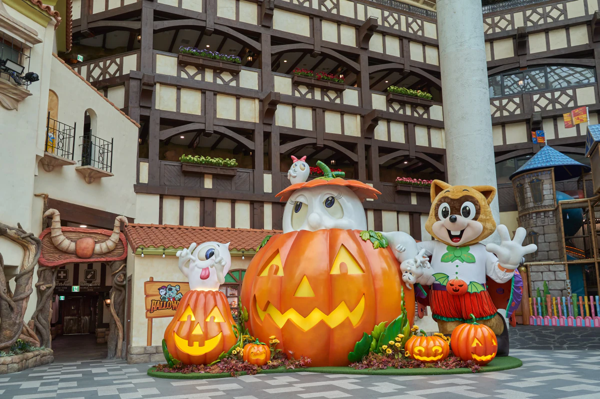
These are useful, especially because Adventure covers multiple floors.
They make logistics easier.
They do not turn a full theme-park day into an effortless day for a small child.
A stroller helps with walking. It does not help during every queue, ride restriction or crowded transition between areas.
Parents may need different priorities
If adults want major thrill rides that younger children cannot use, decide in advance whether:
- one adult waits with the child while another rides
- the group skips the ride
- the adults split briefly and meet again at a clear location
Do not make this decision for the first time at the entrance to a 90-minute queue.
The official park map includes a designated meeting area. Choosing a meeting point before the group separates is a simple precaution that can save unnecessary stress.
Know when the ride plan is finished
You do not have to complete the original list.
If the children have already had the rides they cared about, eaten, seen a show and enjoyed the park, another famous attraction does not automatically make the day better.
This is especially important if you are also considering Seoul Sky, the Aquarium or a long Seokchon Lake walk afterward.
For families, the best decision may be to stop while the day is still going well.
A successful family day at Lotte World is not the maximum number of rides. It is getting the rides that mattered without exhausting everyone to reach them.
Weather Can Change Your Ride Plan
Lotte World has a large indoor park, but that does not mean weather is irrelevant.
Several headline rides are on Magic Island, and outdoor attractions can suspend operation because of rain, strong wind, extreme temperatures or other on-site conditions.
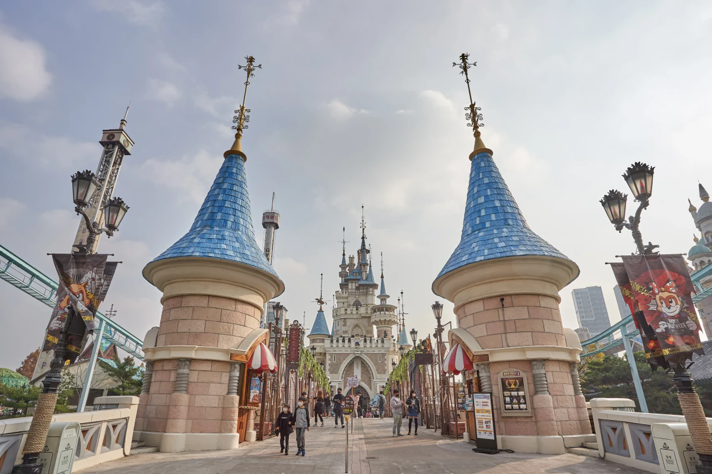
If Atlantis, Comet Express or another outdoor ride is one of your must-rides and the forecast looks unstable, consider protecting it earlier in the day rather than leaving it until the evening.
If outdoor operations are interrupted, switch your attention to Adventure instead of spending hours waiting for Magic Island to reopen.
Bad weather does not ruin a Lotte World day — but it can ruin a plan that depends entirely on outdoor rides.
Food and Rest: Protect the Second Half of the Day
Do not let every break become another queue.
If your morning has already included one or two long waits, use lunch or an afternoon break to actually reset. Sit down, eat properly, refill drinks and decide whether your original ride priorities still make sense.
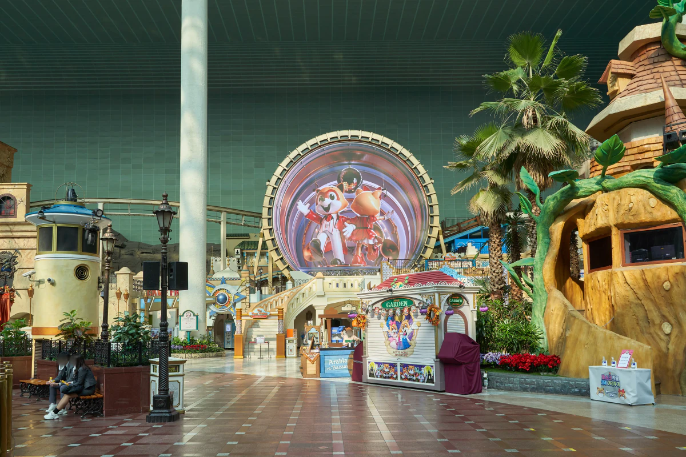
A famous restaurant or snack is not automatically worth another long line when the rest of your day is already under pressure.
For most visitors, the better rule is simple:
Queue for the rides that matter. Be flexible with food.
With children, schedule a real break before everyone is exhausted. With adults, the same logic still applies — a 30-minute reset can protect the next three hours better than squeezing in one low-priority attraction.
Lotte World is easier to enjoy when meals and breaks are part of the plan, not what happens only after the plan has already failed.
Is the School Uniform Experience Worth the Time?
Renting a Korean-style school uniform can be a fun part of a Lotte World visit, especially if photos and the K-culture experience matter to you.
But it costs more than money. It also costs time.
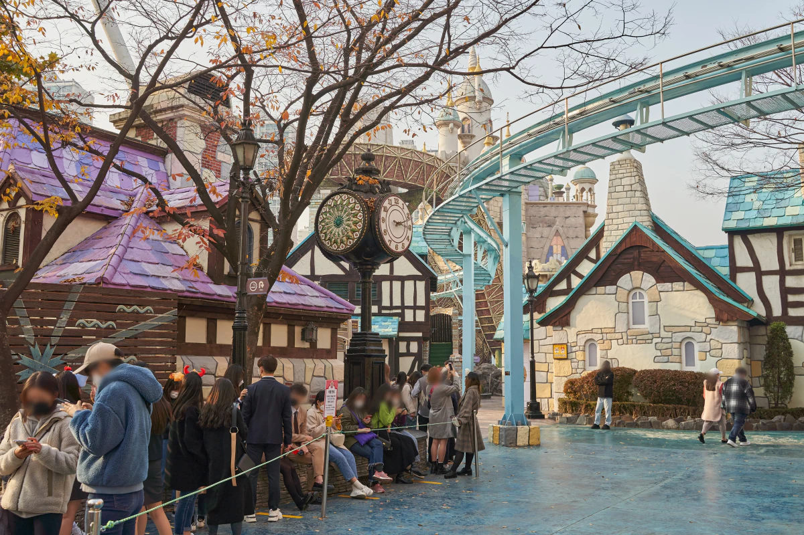
You need to choose an outfit, change clothes, store your belongings and return the uniform later. On a day already dominated by ride queues, that can take time away from your must-rides.
It makes sense if:
- photos are one of the main reasons for your visit
- you are visiting with friends or as a couple
- you are happy to trade some ride time for the experience
Skip it if:
- you have several non-negotiable rides
- you are on an After4 ticket
- your schedule is already tight
- changing clothes and taking photos feels like another task rather than part of the fun
Treat the uniform as an experience, not an automatic Lotte World requirement.
Getting to Lotte World
Lotte World Adventure is directly connected to the Jamsil area and is easiest to reach by subway.
Take Seoul Subway Line 2 or Line 8 to Jamsil Station. For Lotte World Adventure, follow signs toward the Exit 3 / Lotte World side rather than simply following anything labeled “Lotte.”
Do not confuse the theme park with Lotte World Tower
The names are easy to mix up.
Lotte World Adventure is the theme park at 240 Olympic-ro.
Lotte World Tower and Mall are across the complex at 300 Olympic-ro.
If your ticket says Lotte World Adventure, follow the signs for the amusement park, not Seoul Sky or Lotte World Mall.
Arriving with luggage
If you are coming directly from the airport or changing hotels, avoid carrying large bags around the park if possible.
Luggage lockers are available inside the Lotte World complex, but sizes and availability can vary. If you have a large suitcase, check storage options before arriving rather than assuming every locker will fit it.
Best default: arrive with only what you need for the day. Long queues, stairs and moving between Adventure and Magic Island are easier without travel luggage.
What Not to Combine With a Full Lotte World Day
Lotte World, the Aquarium, Seoul Sky and Seokchon Lake are all close together.
That does not mean they belong in the same day.
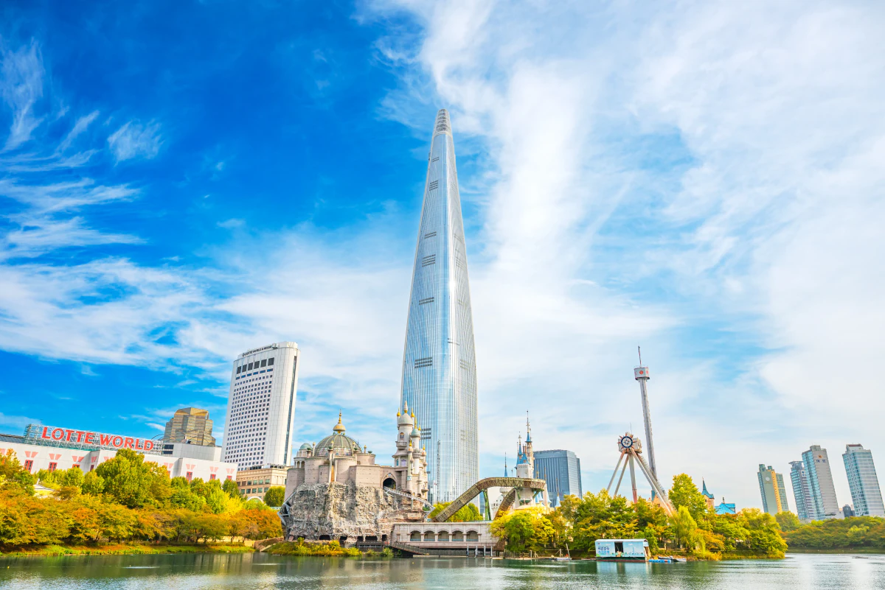
If rides are your priority, give Lotte World the time it needs. Long queues, meals, breaks and moving between Adventure and Magic Island can already fill most of the day.
Lotte World + Aquarium
This combination can work if Lotte World is only part of your day or if you are visiting with children who care more about variety than maximizing rides.
It is a poor default for a full ride-focused day.
Lotte World + Seoul Sky
Possible, but only if you are comfortable leaving the park before you have exhausted your ride list.
Do not add Seoul Sky simply because it is next door.
Seokchon Lake
A short walk can be a pleasant break before or after Lotte World.
A full lake walk is a different activity and needs its own time.
The better rule
If Lotte World is the main reason you came to Jamsil:
Give it the day. Add something else only if your Lotte World plan finishes early.
Close together does not mean they belong in the same itinerary.
Book Lotte World: Check the Online Price Before You Pay
Lotte World publishes its regular admission prices, but you do not necessarily need to pay the full official rate.
Online attraction platforms often sell Lotte World admission for around 20–30% less than the regular price, with larger discounts sometimes available during promotions.
Prices change by date and offer, so compare the current rate before booking.
Before you pay, check:
- whether the ticket is 1Day or After4
- what is included
- the valid visit date
- cancellation and refund conditions
- whether the ticket is admission only or part of a package
Magic Pass is separate from normal admission unless the product specifically says otherwise.
Check the current Lotte World ticket price
If you already know your visit date, check the current Trip.com price against Lotte World's regular price before buying.
Check Lotte World Adventure tickets on Trip.com
Prices and promotions can change, so the price shown on the booking page at the time of purchase is the one that matters.
Lotte World Seoul FAQ
Is one day enough for Lotte World Seoul?
Yes, for most visitors one full day is enough to have a good Lotte World experience, but not necessarily enough to ride everything. Long queues can quickly reduce how many major attractions you complete, so choose your 3–5 must-rides first.
Is After4 worth it?
After4 can be good value if you want a shorter evening visit, only have a few ride priorities or care as much about the atmosphere as the number of rides.
If this is your only visit and several headline rides are non-negotiable, a full-day ticket is usually the safer choice.
Is Magic Pass worth it?
It depends on your must-rides, the expected queues and how much you value your time.
Magic Pass makes more sense when several rides you genuinely care about are eligible and likely to have long waits. It is much less useful if your priorities are flexible or younger children cannot use many of the covered rides.
Can Magic Pass sell out?
Yes. Magic Pass is sold in limited quantities and can sell out.
If it is important to your plan, check the current official purchase rules before your visit rather than assuming you can buy it later in the day.
Is Lotte World good for young children?
Yes, but plan differently from a thrill-ride visit.
Check height restrictions first, use the family and children's attractions that fit your group, and build in real breaks. For younger children, managing energy usually matters more than maximizing ride count.
Is Lotte World mostly indoors?
Adventure is a large indoor theme park, but Magic Island is outdoors and includes several major thrill rides.
Rain, wind or extreme temperatures can therefore still affect your visit, especially if your must-rides are on Magic Island.
What are the best rides at Lotte World?
There is no single best list for everyone.
Thrill-focused visitors often prioritize rides such as Atlantis, Comet Express, French Revolution and the Gyro attractions, while families may choose very differently after checking height restrictions.
The better question is which 3–5 rides would make your own visit feel successful.
Can I visit Lotte World, Seoul Sky and the Aquarium on the same day?
You can, but it is usually too much for a ride-focused Lotte World day.
If Lotte World is your main reason for visiting Jamsil, give it the day and add Seoul Sky or the Aquarium only if you intentionally want a shorter theme-park visit.